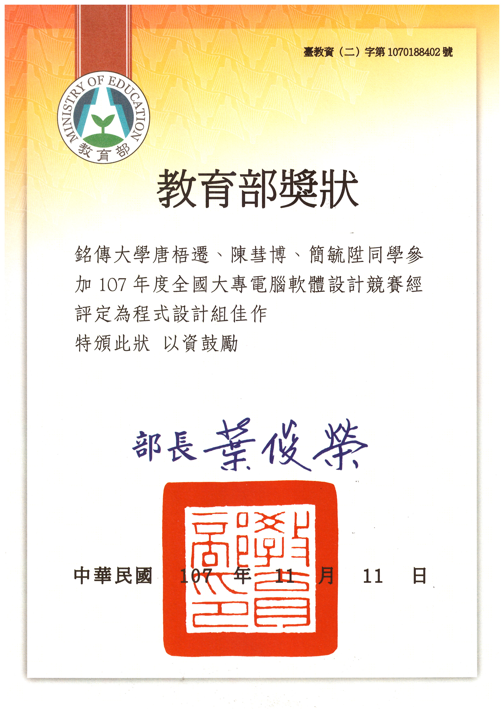
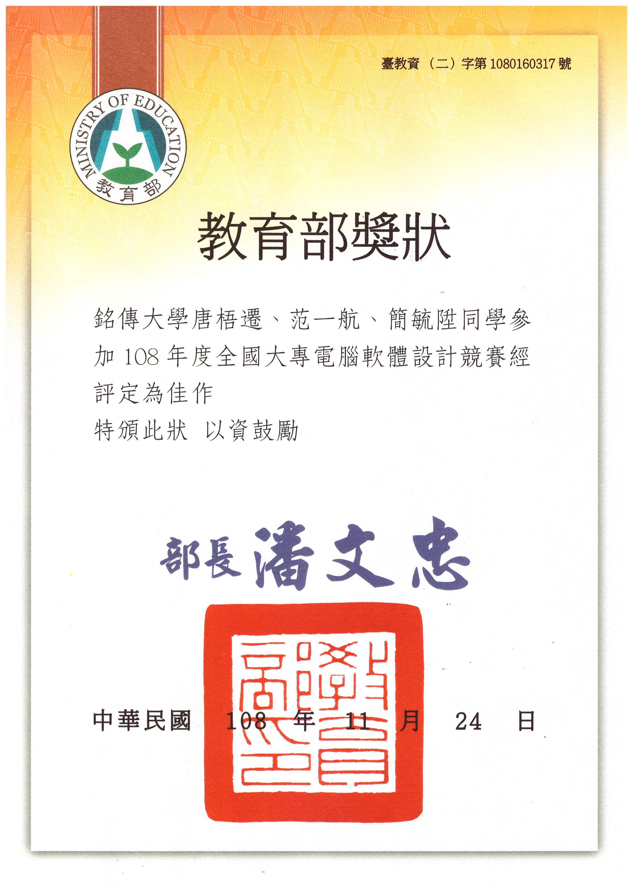
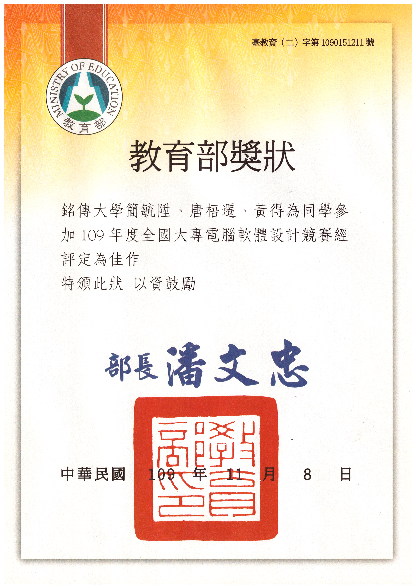

Awards & Honors · Nov 2018–
Nov 2020
Honorable Mention, NCPC
National Collegiate Programming Contest · Nov 2018, Nov 2019, Nov 2020
Media: [Certificates]
Certificates3






Awards & Honors · Nov 2018–
Nov 2020
National Collegiate Programming Contest · Nov 2018, Nov 2019, Nov 2020


